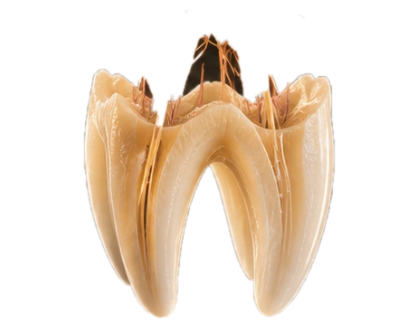
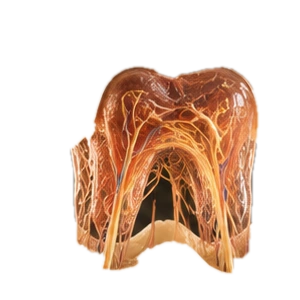
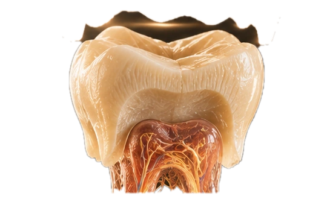
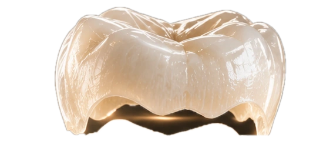
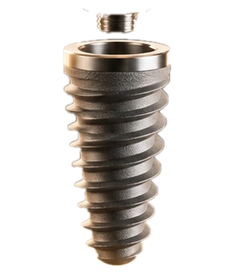
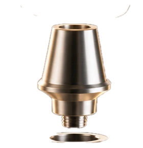
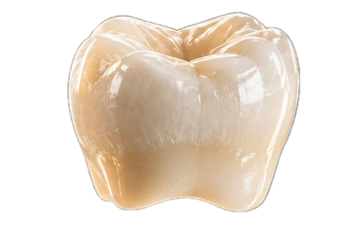

STUDIO DENTALNE MEDICINE · ZAGREB
BEYOND
BEYOND
THE SMILE.
Precizna dentalna medicina oblikovana kao premium iskustvo — od prve snimke do posljednjeg detalja.
ISTRAŽI TRETMANE ↗
01
PRECISION
AESTHETICS
CONFIDENCE
AESTHETICS
CONFIDENCE
02 / TREATMENTS
Bez copy/paste osmijeha. Svaki zahvat ima razlog, redoslijed i cilj.
IMPLANTSSTABILITY / FUNCTION / FORM
VENEERSLIGHT / TEXTURE / PROPORTION
ALIGNMOTION / CONTROL / TIME

03 / ANATOMIJA
VIŠE OD
VIŠE OD
POVRŠINE.
Prvo cijeli zub. Zatim otvaranje. Tek onda slojevi koji se odvajaju bez gubitka zajedničke osi.




01CAKLINAzaštita · sjaj
02DENTINstruktura · volumen
03PULPAživac · cirkulacija
04KORIJENstabilnost · biologija

04 / IMPLANTOLOGIJA
INŽENJERSTVO
INŽENJERSTVO
KOJE NESTAJE.
Vijak se rotacijom dovodi u poziciju, abutment sjeda na os, a krunica zaključava sustav.




01IMPLANTrotacija + insercija
02ABUTMENTprecizno spajanje
03KRUNICAfinalni lock

05 / THE RESULT
DESIGNED
DESIGNED
TO LOOK
UNDESIGNED.
Najbolji rezultat nije onaj koji izgleda “napravljeno”. Nego onaj koji izgleda kao da je oduvijek bio vaš.
READY TO
CHANGE THE
FRAME?
REZERVIRAJ PRVI PREGLED ↗
AUREA DENTAL · ZAGREB+385 1 555 2026DEMO SHOWCASE